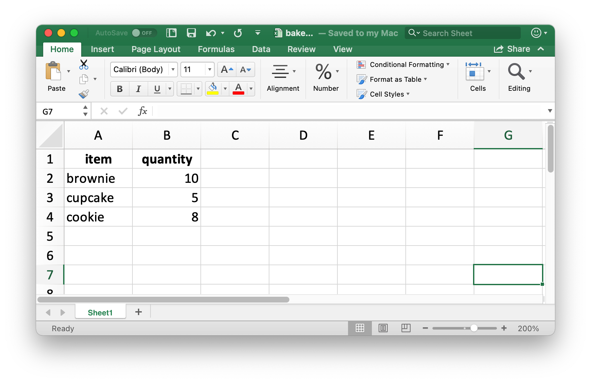
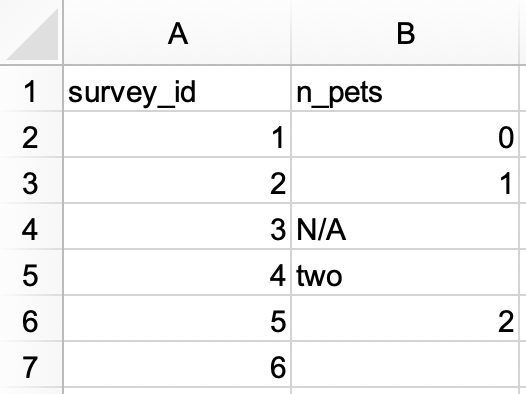
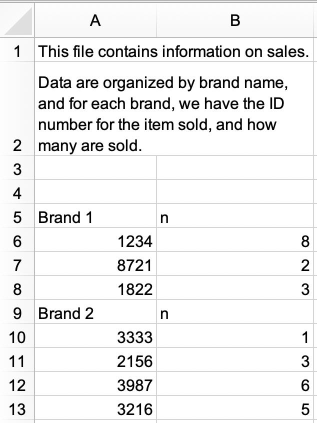

library(readxl)
library(tidyverse)
library(writexl)Spreadsheets
Introduction
In ?@sec-data-import you learned about importing data from plain text files like .csv and .tsv. Now it’s time to learn how to get data out of a spreadsheet, either an Excel spreadsheet or a Google Sheet. This will build on much of what you’ve learned in ?@sec-data-import, but we will also discuss additional considerations and complexities when working with data from spreadsheets.
If you or your collaborators are using spreadsheets for organizing data, we strongly recommend reading the paper “Data Organization in Spreadsheets” by Karl Broman and Kara Woo: https://doi.org/10.1080/00031305.2017.1375989. The best practices presented in this paper will save you much headache when you import data from a spreadsheet into R to analyze and visualize.
Excel
Microsoft Excel is a widely used spreadsheet software program where data are organized in worksheets inside of spreadsheet files.
Prerequisites
In this section, you’ll learn how to load data from Excel spreadsheets in R with the readxl package. This package is non-core tidyverse, so you need to load it explicitly, but it is installed automatically when you install the tidyverse package. Later, we’ll also use the writexl package, which allows us to create Excel spreadsheets.
Getting started
Most of readxl’s functions allow you to load Excel spreadsheets into R:
read_xls()reads Excel files withxlsformat.read_xlsx()read Excel files withxlsxformat.read_excel()can read files with bothxlsandxlsxformat. It guesses the file type based on the input.
These functions all have similar syntax just like other functions we have previously introduced for reading other types of files, e.g., read_csv(), read_table(), etc. For the rest of the chapter we will focus on using read_excel().
Reading Excel spreadsheets
Figure 1 shows what the spreadsheet we’re going to read into R looks like in Excel. This spreadsheet can be downloaded an Excel file from https://docs.google.com/spreadsheets/d/1V1nPp1tzOuutXFLb3G9Eyxi3qxeEhnOXUzL5_BcCQ0w/.

The first argument to read_excel() is the path to the file to read.
students <- read_excel("data/students.xlsx")read_excel() will read the file in as a tibble.
students
#> # A tibble: 6 × 5
#> `Student ID` `Full Name` favourite.food mealPlan AGE
#> <dbl> <chr> <chr> <chr> <chr>
#> 1 1 Sunil Huffmann Strawberry yoghurt Lunch only 4
#> 2 2 Barclay Lynn French fries Lunch only 5
#> 3 3 Jayendra Lyne N/A Breakfast and lunch 7
#> 4 4 Leon Rossini Anchovies Lunch only <NA>
#> 5 5 Chidiegwu Dunkel Pizza Breakfast and lunch five
#> 6 6 Güvenç Attila Ice cream Lunch only 6We have six students in the data and five variables on each student. However there are a few things we might want to address in this dataset:
The column names are all over the place. You can provide column names that follow a consistent format; we recommend
snake_caseusing thecol_namesargument.read_excel( "data/students.xlsx", col_names = c("student_id", "full_name", "favourite_food", "meal_plan", "age") ) #> # A tibble: 7 × 5 #> student_id full_name favourite_food meal_plan age #> <chr> <chr> <chr> <chr> <chr> #> 1 Student ID Full Name favourite.food mealPlan AGE #> 2 1 Sunil Huffmann Strawberry yoghurt Lunch only 4 #> 3 2 Barclay Lynn French fries Lunch only 5 #> 4 3 Jayendra Lyne N/A Breakfast and lunch 7 #> 5 4 Leon Rossini Anchovies Lunch only <NA> #> 6 5 Chidiegwu Dunkel Pizza Breakfast and lunch five #> 7 6 Güvenç Attila Ice cream Lunch only 6Unfortunately, this didn’t quite do the trick. We now have the variable names we want, but what was previously the header row now shows up as the first observation in the data. You can explicitly skip that row using the
skipargument.read_excel( "data/students.xlsx", col_names = c("student_id", "full_name", "favourite_food", "meal_plan", "age"), skip = 1 ) #> # A tibble: 6 × 5 #> student_id full_name favourite_food meal_plan age #> <dbl> <chr> <chr> <chr> <chr> #> 1 1 Sunil Huffmann Strawberry yoghurt Lunch only 4 #> 2 2 Barclay Lynn French fries Lunch only 5 #> 3 3 Jayendra Lyne N/A Breakfast and lunch 7 #> 4 4 Leon Rossini Anchovies Lunch only <NA> #> 5 5 Chidiegwu Dunkel Pizza Breakfast and lunch five #> 6 6 Güvenç Attila Ice cream Lunch only 6In the
favourite_foodcolumn, one of the observations isN/A, which stands for “not available” but it’s currently not recognized as anNA(note the contrast between thisN/Aand the age of the fourth student in the list). You can specify which character strings should be recognized asNAs with thenaargument. By default, only""(empty string, or, in the case of reading from a spreadsheet, an empty cell or a cell with the formula=NA()) is recognized as anNA.read_excel( "data/students.xlsx", col_names = c("student_id", "full_name", "favourite_food", "meal_plan", "age"), skip = 1, na = c("", "N/A") ) #> # A tibble: 6 × 5 #> student_id full_name favourite_food meal_plan age #> <dbl> <chr> <chr> <chr> <chr> #> 1 1 Sunil Huffmann Strawberry yoghurt Lunch only 4 #> 2 2 Barclay Lynn French fries Lunch only 5 #> 3 3 Jayendra Lyne <NA> Breakfast and lunch 7 #> 4 4 Leon Rossini Anchovies Lunch only <NA> #> 5 5 Chidiegwu Dunkel Pizza Breakfast and lunch five #> 6 6 Güvenç Attila Ice cream Lunch only 6One other remaining issue is that
ageis read in as a character variable, but it really should be numeric. Just like withread_csv()and friends for reading data from flat files, you can supply acol_typesargument toread_excel()and specify the column types for the variables you read in. The syntax is a bit different, though. Your options are"skip","guess","logical","numeric","date","text"or"list".read_excel( "data/students.xlsx", col_names = c("student_id", "full_name", "favourite_food", "meal_plan", "age"), skip = 1, na = c("", "N/A"), col_types = c("numeric", "text", "text", "text", "numeric") ) #> Warning: Expecting numeric in E6 / R6C5: got 'five' #> # A tibble: 6 × 5 #> student_id full_name favourite_food meal_plan age #> <dbl> <chr> <chr> <chr> <dbl> #> 1 1 Sunil Huffmann Strawberry yoghurt Lunch only 4 #> 2 2 Barclay Lynn French fries Lunch only 5 #> 3 3 Jayendra Lyne <NA> Breakfast and lunch 7 #> 4 4 Leon Rossini Anchovies Lunch only NA #> 5 5 Chidiegwu Dunkel Pizza Breakfast and lunch NA #> 6 6 Güvenç Attila Ice cream Lunch only 6However, this didn’t quite produce the desired result either. By specifying that
ageshould be numeric, we have turned the one cell with the non-numeric entry (which had the valuefive) into anNA. In this case, we should read age in as"text"and then make the change once the data is loaded in R.students <- read_excel( "data/students.xlsx", col_names = c("student_id", "full_name", "favourite_food", "meal_plan", "age"), skip = 1, na = c("", "N/A"), col_types = c("numeric", "text", "text", "text", "text") ) students <- students |> mutate( age = if_else(age == "five", "5", age), age = parse_number(age) ) students #> # A tibble: 6 × 5 #> student_id full_name favourite_food meal_plan age #> <dbl> <chr> <chr> <chr> <dbl> #> 1 1 Sunil Huffmann Strawberry yoghurt Lunch only 4 #> 2 2 Barclay Lynn French fries Lunch only 5 #> 3 3 Jayendra Lyne <NA> Breakfast and lunch 7 #> 4 4 Leon Rossini Anchovies Lunch only NA #> 5 5 Chidiegwu Dunkel Pizza Breakfast and lunch 5 #> 6 6 Güvenç Attila Ice cream Lunch only 6
It took us multiple steps and trial-and-error to load the data in exactly the format we want, and this is not unexpected. Data science is an iterative process, and the process of iteration can be even more tedious when reading data in from spreadsheets compared to other plain text, rectangular data files because humans tend to input data into spreadsheets and use them not just for data storage but also for sharing and communication.
There is no way to know exactly what the data will look like until you load it and take a look at it. Well, there is one way, actually. You can open the file in Excel and take a peek. If you’re going to do so, we recommend making a copy of the Excel file to open and browse interactively while leaving the original data file untouched and reading into R from the untouched file. This will ensure you don’t accidentally overwrite anything in the spreadsheet while inspecting it. You should also not be afraid of doing what we did here: load the data, take a peek, make adjustments to your code, load it again, and repeat until you’re happy with the result.
Reading worksheets
An important feature that distinguishes spreadsheets from flat files is the notion of multiple sheets, called worksheets. Figure 2 shows an Excel spreadsheet with multiple worksheets. The data come from the palmerpenguins package, and you can download this spreadsheet as an Excel file from https://docs.google.com/spreadsheets/d/1aFu8lnD_g0yjF5O-K6SFgSEWiHPpgvFCF0NY9D6LXnY/. Each worksheet contains information on penguins from a different island where data were collected.

You can read a single worksheet from a spreadsheet with the sheet argument in read_excel(). The default, which we’ve been relying on up until now, is the first sheet.
read_excel("data/penguins.xlsx", sheet = "Torgersen Island")
#> # A tibble: 52 × 8
#> species island bill_length_mm bill_depth_mm flipper_length_mm
#> <chr> <chr> <chr> <chr> <chr>
#> 1 Adelie Torgersen 39.1 18.7 181
#> 2 Adelie Torgersen 39.5 17.399999999999999 186
#> 3 Adelie Torgersen 40.299999999999997 18 195
#> 4 Adelie Torgersen NA NA NA
#> 5 Adelie Torgersen 36.700000000000003 19.3 193
#> 6 Adelie Torgersen 39.299999999999997 20.6 190
#> # ℹ 46 more rows
#> # ℹ 3 more variables: body_mass_g <chr>, sex <chr>, year <dbl>Some variables that appear to contain numerical data are read in as characters due to the character string "NA" not being recognized as a true NA.
penguins_torgersen <- read_excel("data/penguins.xlsx", sheet = "Torgersen Island", na = "NA")
penguins_torgersen
#> # A tibble: 52 × 8
#> species island bill_length_mm bill_depth_mm flipper_length_mm
#> <chr> <chr> <dbl> <dbl> <dbl>
#> 1 Adelie Torgersen 39.1 18.7 181
#> 2 Adelie Torgersen 39.5 17.4 186
#> 3 Adelie Torgersen 40.3 18 195
#> 4 Adelie Torgersen NA NA NA
#> 5 Adelie Torgersen 36.7 19.3 193
#> 6 Adelie Torgersen 39.3 20.6 190
#> # ℹ 46 more rows
#> # ℹ 3 more variables: body_mass_g <dbl>, sex <chr>, year <dbl>Alternatively, you can use excel_sheets() to get information on all worksheets in an Excel spreadsheet, and then read the one(s) you’re interested in.
excel_sheets("data/penguins.xlsx")
#> [1] "Torgersen Island" "Biscoe Island" "Dream Island"Once you know the names of the worksheets, you can read them in individually with read_excel().
penguins_biscoe <- read_excel("data/penguins.xlsx", sheet = "Biscoe Island", na = "NA")
penguins_dream <- read_excel("data/penguins.xlsx", sheet = "Dream Island", na = "NA")In this case the full penguins dataset is spread across three worksheets in the spreadsheet. Each worksheet has the same number of columns but different numbers of rows.
dim(penguins_torgersen)
#> [1] 52 8
dim(penguins_biscoe)
#> [1] 168 8
dim(penguins_dream)
#> [1] 124 8We can put them together with bind_rows().
penguins <- bind_rows(penguins_torgersen, penguins_biscoe, penguins_dream)
penguins
#> # A tibble: 344 × 8
#> species island bill_length_mm bill_depth_mm flipper_length_mm
#> <chr> <chr> <dbl> <dbl> <dbl>
#> 1 Adelie Torgersen 39.1 18.7 181
#> 2 Adelie Torgersen 39.5 17.4 186
#> 3 Adelie Torgersen 40.3 18 195
#> 4 Adelie Torgersen NA NA NA
#> 5 Adelie Torgersen 36.7 19.3 193
#> 6 Adelie Torgersen 39.3 20.6 190
#> # ℹ 338 more rows
#> # ℹ 3 more variables: body_mass_g <dbl>, sex <chr>, year <dbl>In ?@sec-iteration we’ll talk about ways of doing this sort of task without repetitive code.
Reading part of a sheet
Since many use Excel spreadsheets for presentation as well as for data storage, it’s quite common to find cell entries in a spreadsheet that are not part of the data you want to read into R. Figure 3 shows such a spreadsheet: in the middle of the sheet is what looks like a data frame but there is extraneous text in cells above and below the data.
![A look at the deaths spreadsheet in Excel. The spreadsheet has four rows on top that contain non-data information; the text 'For the same of consistency in the data layout, which is really a beautiful thing, I will keep making notes up here.' is spread across cells in these top four rows. Then, there is a data frame that includes information on deaths of 10 famous people, including their names, professions, ages, whether they have kids or not, date of birth and death. At the bottom, there are four more rows of non-data information; the text 'This has been really fun, but we're signing off now!' is spread across cells in these bottom four rows.](screenshots/import-spreadsheets-deaths.png)
This spreadsheet is one of the example spreadsheets provided in the readxl package. You can use the readxl_example() function to locate the spreadsheet on your system in the directory where the package is installed. This function returns the path to the spreadsheet, which you can use in read_excel() as usual.
deaths_path <- readxl_example("deaths.xlsx")
deaths <- read_excel(deaths_path)
#> New names:
#> • `` -> `...2`
#> • `` -> `...3`
#> • `` -> `...4`
#> • `` -> `...5`
#> • `` -> `...6`
deaths
#> # A tibble: 18 × 6
#> `Lots of people` ...2 ...3 ...4 ...5 ...6
#> <chr> <chr> <chr> <chr> <chr> <chr>
#> 1 simply cannot resi… <NA> <NA> <NA> <NA> some notes
#> 2 at the top <NA> of their spreadsh…
#> 3 or merging <NA> <NA> <NA> cells
#> 4 Name Profession Age Has kids Date of birth Date of death
#> 5 David Bowie musician 69 TRUE 17175 42379
#> 6 Carrie Fisher actor 60 TRUE 20749 42731
#> # ℹ 12 more rowsThe top three rows and the bottom four rows are not part of the data frame. It’s possible to eliminate these extraneous rows using the skip and n_max arguments, but we recommend using cell ranges. In Excel, the top left cell is A1. As you move across columns to the right, the cell label moves down the alphabet, i.e. B1, C1, etc. And as you move down a column, the number in the cell label increases, i.e. A2, A3, etc.
Here the data we want to read in starts in cell A5 and ends in cell F15. In spreadsheet notation, this is A5:F15, which we supply to the range argument:
read_excel(deaths_path, range = "A5:F15")
#> # A tibble: 10 × 6
#> Name Profession Age `Has kids` `Date of birth`
#> <chr> <chr> <dbl> <lgl> <dttm>
#> 1 David Bowie musician 69 TRUE 1947-01-08 00:00:00
#> 2 Carrie Fisher actor 60 TRUE 1956-10-21 00:00:00
#> 3 Chuck Berry musician 90 TRUE 1926-10-18 00:00:00
#> 4 Bill Paxton actor 61 TRUE 1955-05-17 00:00:00
#> 5 Prince musician 57 TRUE 1958-06-07 00:00:00
#> 6 Alan Rickman actor 69 FALSE 1946-02-21 00:00:00
#> # ℹ 4 more rows
#> # ℹ 1 more variable: `Date of death` <dttm>Data types
In CSV files, all values are strings. This is not particularly true to the data, but it is simple: everything is a string.
The underlying data in Excel spreadsheets is more complex. A cell can be one of four things:
A boolean, like
TRUE,FALSE, orNA.A number, like “10” or “10.5”.
A datetime, which can also include time like “11/1/21” or “11/1/21 3:00 PM”.
A text string, like “ten”.
When working with spreadsheet data, it’s important to keep in mind that the underlying data can be very different than what you see in the cell. For example, Excel has no notion of an integer. All numbers are stored as floating points, but you can choose to display the data with a customizable number of decimal points. Similarly, dates are actually stored as numbers, specifically the number of seconds since January 1, 1970. You can customize how you display the date by applying formatting in Excel. Confusingly, it’s also possible to have something that looks like a number but is actually a string (e.g., type '10 into a cell in Excel).
These differences between how the underlying data are stored vs. how they’re displayed can cause surprises when the data are loaded into R. By default readxl will guess the data type in a given column. A recommended workflow is to let readxl guess the column types, confirm that you’re happy with the guessed column types, and if not, go back and re-import specifying col_types as shown in Section 1.2.3.
Another challenge is when you have a column in your Excel spreadsheet that has a mix of these types, e.g., some cells are numeric, others text, others dates. When importing the data into R readxl has to make some decisions. In these cases you can set the type for this column to "list", which will load the column as a list of length 1 vectors, where the type of each element of the vector is guessed.
Sometimes data is stored in more exotic ways, like the color of the cell background, or whether or not the text is bold. In such cases, you might find the tidyxl package useful. See https://nacnudus.github.io/spreadsheet-munging-strategies/ for more on strategies for working with non-tabular data from Excel.
Writing to Excel
Let’s create a small data frame that we can then write out. Note that item is a factor and quantity is an integer.
bake_sale <- tibble(
item = factor(c("brownie", "cupcake", "cookie")),
quantity = c(10, 5, 8)
)
bake_sale
#> # A tibble: 3 × 2
#> item quantity
#> <fct> <dbl>
#> 1 brownie 10
#> 2 cupcake 5
#> 3 cookie 8You can write data back to disk as an Excel file using the write_xlsx() from the writexl package:
write_xlsx(bake_sale, path = "data/bake-sale.xlsx")Figure 4 shows what the data looks like in Excel. Note that column names are included and bolded. These can be turned off by setting col_names and format_headers arguments to FALSE.

Just like reading from a CSV, information on data type is lost when we read the data back in. This makes Excel files unreliable for caching interim results as well. For alternatives, see ?@sec-writing-to-a-file.
read_excel("data/bake-sale.xlsx")
#> # A tibble: 3 × 2
#> item quantity
#> <chr> <dbl>
#> 1 brownie 10
#> 2 cupcake 5
#> 3 cookie 8Formatted output
The writexl package is a light-weight solution for writing a simple Excel spreadsheet, but if you’re interested in additional features like writing to sheets within a spreadsheet and styling, you will want to use the openxlsx package. We won’t go into the details of using this package here, but we recommend reading https://ycphs.github.io/openxlsx/articles/Formatting.html for an extensive discussion on further formatting functionality for data written from R to Excel with openxlsx.
Note that this package is not part of the tidyverse so the functions and workflows may feel unfamiliar. For example, function names are camelCase, multiple functions can’t be composed in pipelines, and arguments are in a different order than they tend to be in the tidyverse. However, this is ok. As your R learning and usage expands outside of this book you will encounter lots of different styles used in various R packages that you might use to accomplish specific goals in R. A good way of familiarizing yourself with the coding style used in a new package is to run the examples provided in function documentation to get a feel for the syntax and the output formats as well as reading any vignettes that might come with the package.
Exercises
In an Excel file, create the following dataset and save it as
survey.xlsx. Alternatively, you can download it as an Excel file from here.
Then, read it into R, with
survey_idas a character variable andn_petsas a numerical variable.#> # A tibble: 6 × 2 #> survey_id n_pets #> <chr> <dbl> #> 1 1 0 #> 2 2 1 #> 3 3 NA #> 4 4 2 #> 5 5 2 #> 6 6 NAIn another Excel file, create the following dataset and save it as
roster.xlsx. Alternatively, you can download it as an Excel file from here.
Then, read it into R. The resulting data frame should be called
rosterand should look like the following.#> # A tibble: 12 × 3 #> group subgroup id #> <dbl> <chr> <dbl> #> 1 1 A 1 #> 2 1 A 2 #> 3 1 A 3 #> 4 1 B 4 #> 5 1 B 5 #> 6 1 B 6 #> 7 1 B 7 #> 8 2 A 8 #> 9 2 A 9 #> 10 2 B 10 #> 11 2 B 11 #> 12 2 B 12In a new Excel file, create the following dataset and save it as
sales.xlsx. Alternatively, you can download it as an Excel file from here.
a. Read
sales.xlsxin and save assales. The data frame should look like the following, withidandnas column names and with 9 rows.#> # A tibble: 9 × 2 #> id n #> <chr> <chr> #> 1 Brand 1 n #> 2 1234 8 #> 3 8721 2 #> 4 1822 3 #> 5 Brand 2 n #> 6 3333 1 #> 7 2156 3 #> 8 3987 6 #> 9 3216 5b. Modify
salesfurther to get it into the following tidy format with three columns (brand,id, andn) and 7 rows of data. Note thatidandnare numeric,brandis a character variable.#> # A tibble: 7 × 3 #> brand id n #> <chr> <dbl> <dbl> #> 1 Brand 1 1234 8 #> 2 Brand 1 8721 2 #> 3 Brand 1 1822 3 #> 4 Brand 2 3333 1 #> 5 Brand 2 2156 3 #> 6 Brand 2 3987 6 #> 7 Brand 2 3216 5Recreate the
bake_saledata frame, write it out to an Excel file using thewrite.xlsx()function from the openxlsx package.In ?@sec-data-import you learned about the
janitor::clean_names()function to turn column names into snake case. Read thestudents.xlsxfile that we introduced earlier in this section and use this function to “clean” the column names.What happens if you try to read in a file with
.xlsxextension withread_xls()?
Google Sheets
Google Sheets is another widely used spreadsheet program. It’s free and web-based. Just like with Excel, in Google Sheets data are organized in worksheets (also called sheets) inside of spreadsheet files.
Prerequisites
This section will also focus on spreadsheets, but this time you’ll be loading data from a Google Sheet with the googlesheets4 package. This package is non-core tidyverse as well, you need to load it explicitly.
library(googlesheets4)
library(tidyverse)A quick note about the name of the package: googlesheets4 uses v4 of the Sheets API v4 to provide an R interface to Google Sheets, hence the name.
Getting started
The main function of the googlesheets4 package is read_sheet(), which reads a Google Sheet from a URL or a file id. This function also goes by the name range_read().
You can also create a brand new sheet with gs4_create() or write to an existing sheet with sheet_write() and friends.
In this section we’ll work with the same datasets as the ones in the Excel section to highlight similarities and differences between workflows for reading data from Excel and Google Sheets. readxl and googlesheets4 packages are both designed to mimic the functionality of the readr package, which provides the read_csv() function you’ve seen in ?@sec-data-import. Therefore, many of the tasks can be accomplished with simply swapping out read_excel() for read_sheet(). However you’ll also see that Excel and Google Sheets don’t behave in exactly the same way, therefore other tasks may require further updates to the function calls.
Reading Google Sheets
Figure 5 shows what the spreadsheet we’re going to read into R looks like in Google Sheets. This is the same dataset as in Figure 1, except it’s stored in a Google Sheet instead of Excel.

The first argument to read_sheet() is the URL of the file to read, and it returns a tibble:
https://docs.google.com/spreadsheets/d/1V1nPp1tzOuutXFLb3G9Eyxi3qxeEhnOXUzL5_BcCQ0w. These URLs are not pleasant to work with, so you’ll often want to identify a sheet by its ID.
gs4_deauth()students_sheet_id <- "1V1nPp1tzOuutXFLb3G9Eyxi3qxeEhnOXUzL5_BcCQ0w"
students <- read_sheet(students_sheet_id)
#> ✔ Reading from students.
#> ✔ Range Sheet1.
students
#> # A tibble: 6 × 5
#> `Student ID` `Full Name` favourite.food mealPlan AGE
#> <dbl> <chr> <chr> <chr> <list>
#> 1 1 Sunil Huffmann Strawberry yoghurt Lunch only <dbl>
#> 2 2 Barclay Lynn French fries Lunch only <dbl>
#> 3 3 Jayendra Lyne N/A Breakfast and lunch <dbl>
#> 4 4 Leon Rossini Anchovies Lunch only <NULL>
#> 5 5 Chidiegwu Dunkel Pizza Breakfast and lunch <chr>
#> 6 6 Güvenç Attila Ice cream Lunch only <dbl>Just like we did with read_excel(), we can supply column names, NA strings, and column types to read_sheet().
students <- read_sheet(
students_sheet_id,
col_names = c("student_id", "full_name", "favourite_food", "meal_plan", "age"),
skip = 1,
na = c("", "N/A"),
col_types = "dcccc"
)
#> ✔ Reading from students.
#> ✔ Range 2:10000000.
students
#> # A tibble: 6 × 5
#> student_id full_name favourite_food meal_plan age
#> <dbl> <chr> <chr> <chr> <chr>
#> 1 1 Sunil Huffmann Strawberry yoghurt Lunch only 4
#> 2 2 Barclay Lynn French fries Lunch only 5
#> 3 3 Jayendra Lyne <NA> Breakfast and lunch 7
#> 4 4 Leon Rossini Anchovies Lunch only <NA>
#> 5 5 Chidiegwu Dunkel Pizza Breakfast and lunch five
#> 6 6 Güvenç Attila Ice cream Lunch only 6Note that we defined column types a bit differently here, using short codes. For example, “dcccc” stands for “double, character, character, character, character”.
It’s also possible to read individual sheets from Google Sheets as well. Let’s read the “Torgersen Island” sheet from the penguins Google Sheet:
penguins_sheet_id <- "1aFu8lnD_g0yjF5O-K6SFgSEWiHPpgvFCF0NY9D6LXnY"
read_sheet(penguins_sheet_id, sheet = "Torgersen Island")
#> ✔ Reading from penguins.
#> ✔ Range ''Torgersen Island''.
#> # A tibble: 52 × 8
#> species island bill_length_mm bill_depth_mm flipper_length_mm
#> <chr> <chr> <list> <list> <list>
#> 1 Adelie Torgersen <dbl [1]> <dbl [1]> <dbl [1]>
#> 2 Adelie Torgersen <dbl [1]> <dbl [1]> <dbl [1]>
#> 3 Adelie Torgersen <dbl [1]> <dbl [1]> <dbl [1]>
#> 4 Adelie Torgersen <chr [1]> <chr [1]> <chr [1]>
#> 5 Adelie Torgersen <dbl [1]> <dbl [1]> <dbl [1]>
#> 6 Adelie Torgersen <dbl [1]> <dbl [1]> <dbl [1]>
#> # ℹ 46 more rows
#> # ℹ 3 more variables: body_mass_g <list>, sex <chr>, year <dbl>You can obtain a list of all sheets within a Google Sheet with sheet_names():
sheet_names(penguins_sheet_id)
#> [1] "Torgersen Island" "Biscoe Island" "Dream Island"Finally, just like with read_excel(), we can read in a portion of a Google Sheet by defining a range in read_sheet(). Note that we’re also using the gs4_example() function below to locate an example Google Sheet that comes with the googlesheets4 package.
deaths_url <- gs4_example("deaths")
deaths <- read_sheet(deaths_url, range = "A5:F15")
#> ✔ Reading from deaths.
#> ✔ Range A5:F15.
deaths
#> # A tibble: 10 × 6
#> Name Profession Age `Has kids` `Date of birth`
#> <chr> <chr> <dbl> <lgl> <dttm>
#> 1 David Bowie musician 69 TRUE 1947-01-08 00:00:00
#> 2 Carrie Fisher actor 60 TRUE 1956-10-21 00:00:00
#> 3 Chuck Berry musician 90 TRUE 1926-10-18 00:00:00
#> 4 Bill Paxton actor 61 TRUE 1955-05-17 00:00:00
#> 5 Prince musician 57 TRUE 1958-06-07 00:00:00
#> 6 Alan Rickman actor 69 FALSE 1946-02-21 00:00:00
#> # ℹ 4 more rows
#> # ℹ 1 more variable: `Date of death` <dttm>Writing to Google Sheets
You can write from R to Google Sheets with write_sheet(). The first argument is the data frame to write, and the second argument is the name (or other identifier) of the Google Sheet to write to:
write_sheet(bake_sale, ss = "bake-sale")If you’d like to write your data to a specific (work)sheet inside a Google Sheet, you can specify that with the sheet argument as well.
write_sheet(bake_sale, ss = "bake-sale", sheet = "Sales")Authentication
While you can read from a public Google Sheet without authenticating with your Google account and with gs4_deauth(), reading a private sheet or writing to a sheet requires authentication so that googlesheets4 can view and manage your Google Sheets.
When you attempt to read in a sheet that requires authentication, googlesheets4 will direct you to a web browser with a prompt to sign in to your Google account and grant permission to operate on your behalf with Google Sheets. However, if you want to specify a specific Google account, authentication scope, etc. you can do so with gs4_auth(), e.g., gs4_auth(email = "mine@example.com"), which will force the use of a token associated with a specific email. For further authentication details, we recommend reading the documentation googlesheets4 auth vignette: https://googlesheets4.tidyverse.org/articles/auth.html.
Exercises
Read the
studentsdataset from earlier in the chapter from Excel and also from Google Sheets, with no additional arguments supplied to theread_excel()andread_sheet()functions. Are the resulting data frames in R exactly the same? If not, how are they different?Read the Google Sheet titled survey from https://pos.it/r4ds-survey, with
survey_idas a character variable andn_petsas a numerical variable.Read the Google Sheet titled roster from https://pos.it/r4ds-roster. The resulting data frame should be called
rosterand should look like the following.#> # A tibble: 12 × 3 #> group subgroup id #> <dbl> <chr> <dbl> #> 1 1 A 1 #> 2 1 A 2 #> 3 1 A 3 #> 4 1 B 4 #> 5 1 B 5 #> 6 1 B 6 #> 7 1 B 7 #> 8 2 A 8 #> 9 2 A 9 #> 10 2 B 10 #> 11 2 B 11 #> 12 2 B 12
Summary
Microsoft Excel and Google Sheets are two of the most popular spreadsheet systems. Being able to interact with data stored in Excel and Google Sheets files directly from R is a superpower! In this chapter you learned how to read data into R from spreadsheets from Excel with read_excel() from the readxl package and from Google Sheets with read_sheet() from the googlesheets4 package. These functions work very similarly to each other and have similar arguments for specifying column names, NA strings, rows to skip on top of the file you’re reading in, etc. Additionally, both functions make it possible to read a single sheet from a spreadsheet as well.
On the other hand, writing to an Excel file requires a different package and function (writexl::write_xlsx()) while you can write to a Google Sheet with the googlesheets4 package, with write_sheet().
In the next chapter, you’ll learn about a different data source and how to read data from that source into R: databases.